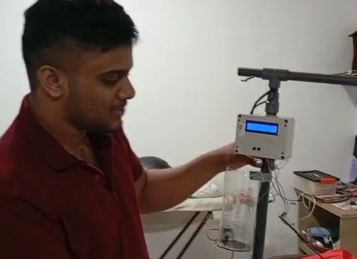
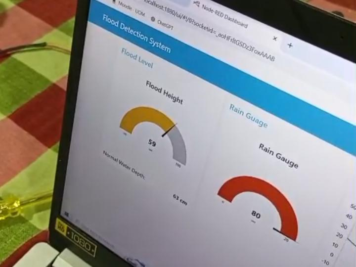

Flood-level Sensor
This project implements an IoT-based flood monitoring and alerting system designed to track water levels in real-time. The hardware architecture utilizes ultrasonic sensors for non-contact distance measurement to calculate water depth, interfaced with a microcontroller that processes the data and handles communication. The system is designed to trigger visual and auditory alerts via LEDs and buzzers once the water level exceeds predefined safety thresholds.
The software stack manages data acquisition, threshold logic, and network connectivity for remote monitoring. By utilizing low-power communication protocols, the system can transmit live telemetry to a centralized dashboard or mobile interface, enabling early warning notifications. The integration of robust sensing and cloud-based data logging ensures high reliability for flood risk assessment and historical data analysis in vulnerable environments.
A Node
A node which detects the flood level
Operation
The system in operation
Dashboard
The NodeRED dashboard for data visualization